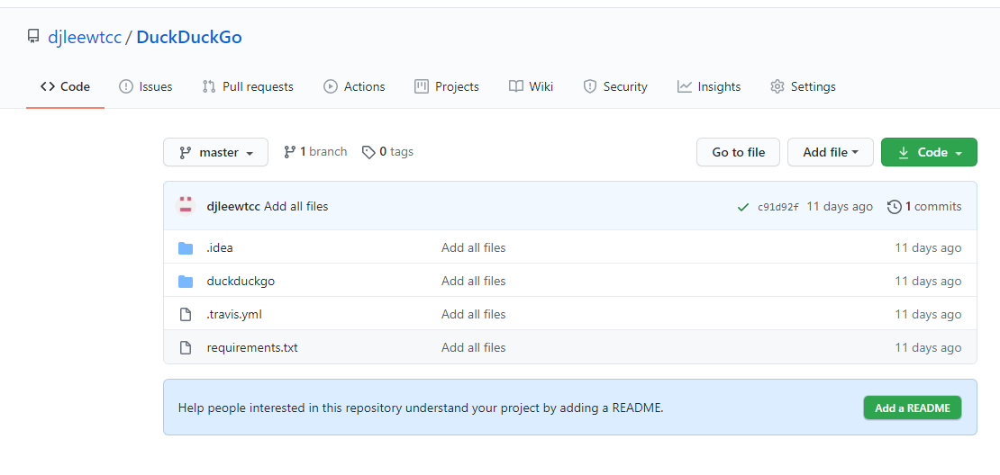
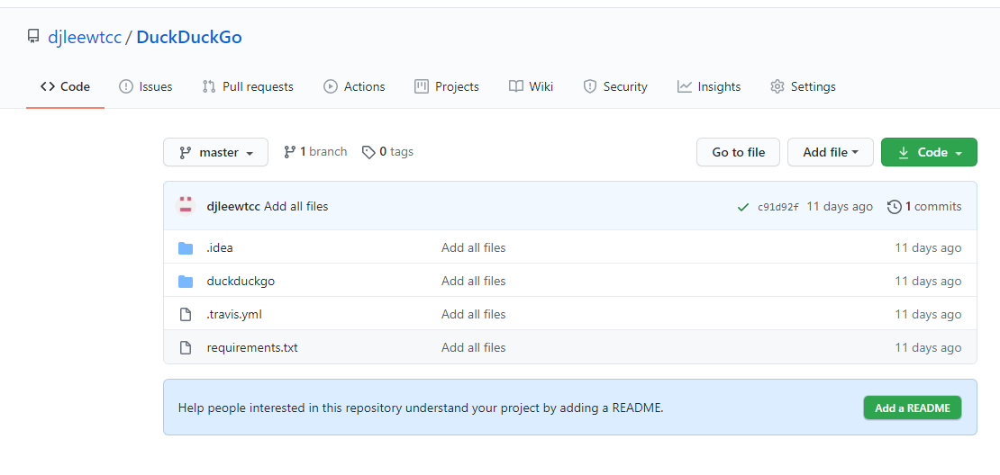

Projects
Project Name: DuckDuckGo
Project Link: https://github.com/djleewtcc/DuckDuckGo
Project Description: This application queries the DuckDuckGo search API to check if all of the presidents' last names are listed in the results.

Project Name: DuckDuckGo
Project Link: https://github.com/djleewtcc/DuckDuckGo
Project Description: This application queries the DuckDuckGo search API to check if all of the presidents' last names are listed in the results.
